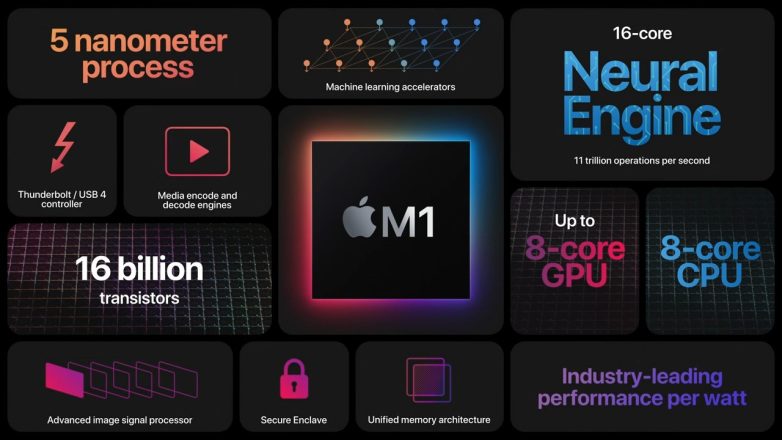
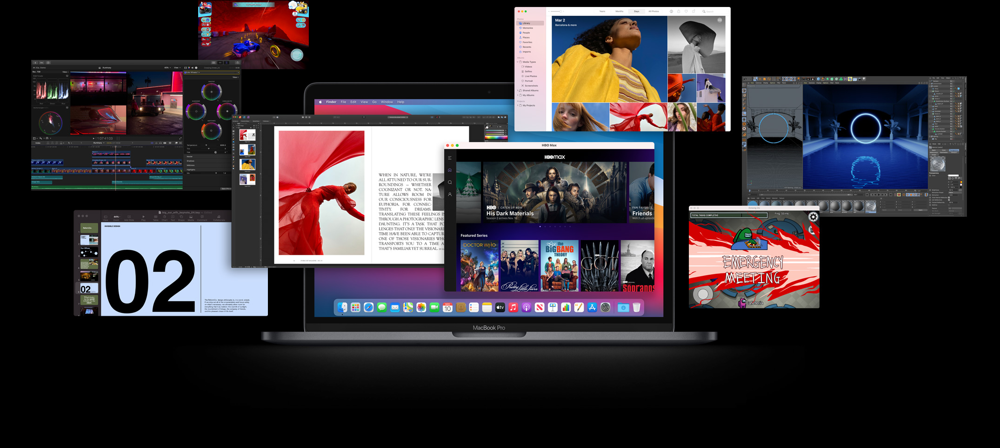
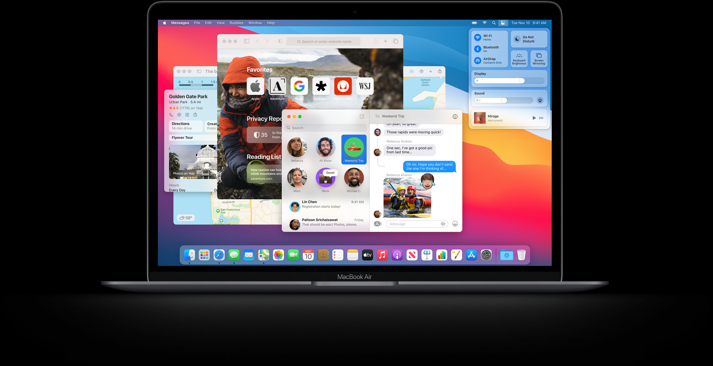

M1 is here. Our first chip designed specifically for Mac, it delivers incredible performance, custom technologies, and
revolutionary power efficiency. And it was designed from the very start to work with the most advanced desktop operating
system in the world, macOS Big Sur. With a giant leap in performance per watt, every Mac with M1 is transformed into a
completely different class of product. This isn’t an upgrade. It’s a breakthrough.
An entire system. On a single chip.

Until now, a Mac needed multiple chips to deliver all of its features — including the processor, I/O, security, and
memory. With M1, these technologies are combined into a single system on a chip (SoC), delivering a new level of
integration for more simplicity, more efficiency, and amazing performance. And with incredibly small transistors
measured at an atomic scale, M1 is remarkably complex — packing the largest number of transistors we’ve ever put into a
single chip. It’s also the first personal computer chip built using industry‑leading 5‑nanometer process technology.

Universal apps
Every app that comes with Mac, and every app made by Apple, is optimized for M1. Apps like Pages, Keynote, GarageBand,
and iMovie show how amazing performance can be with M1. Run up to 3x more instrument and effect plug‑ins with Logic
Pro.11 Fly through tasks with Final Cut Pro, like rendering a complex timeline up to 6x faster.12 Incredibly fast and
more capable than ever, native apps are the most powerful apps for M1. And the new Universal platform means these apps
support both Intel‑based and Apple silicon–based Mac systems. Many developers are already delivering new apps with
game‑changing performance and capabilities. Like color‑correcting 6K video — in real time — with Blackmagic DaVinci
Resolve.

An OS made for M1,
down to its core.
macOS Big Sur is engineered to take full advantage of all the capability and power of the M1 chip — making everything
you love about macOS faster, better, and more secure. It’s our most powerful software ever, running on our most advanced
hardware yet.